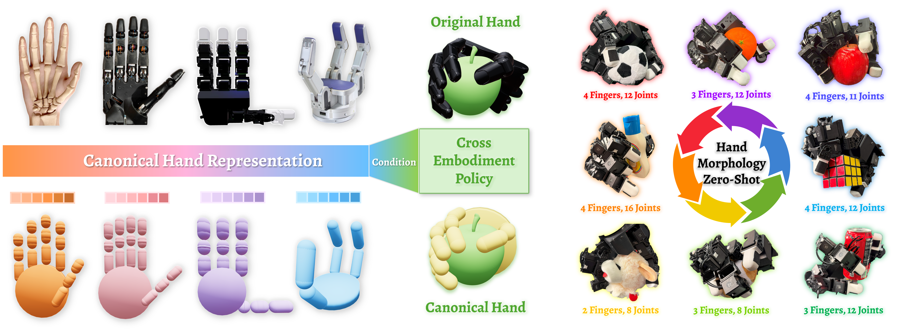
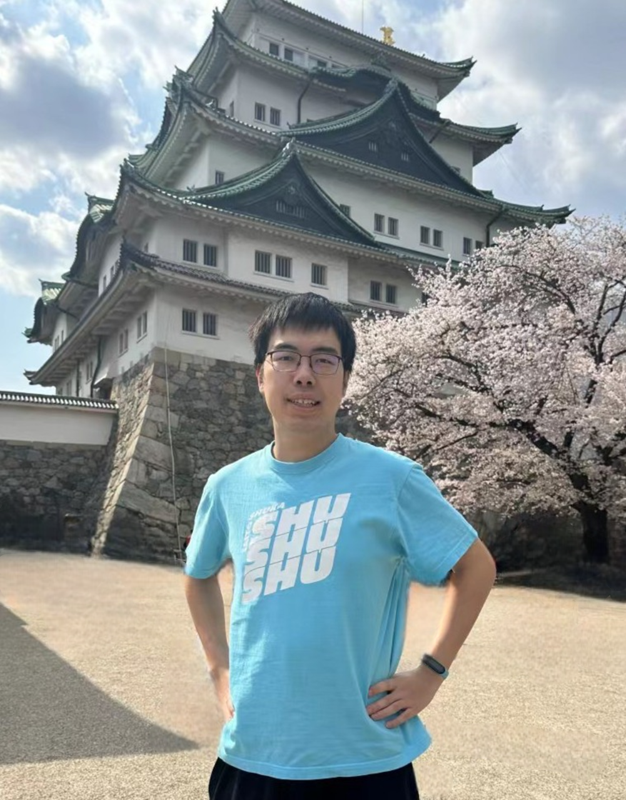
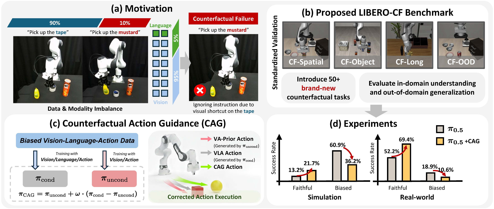
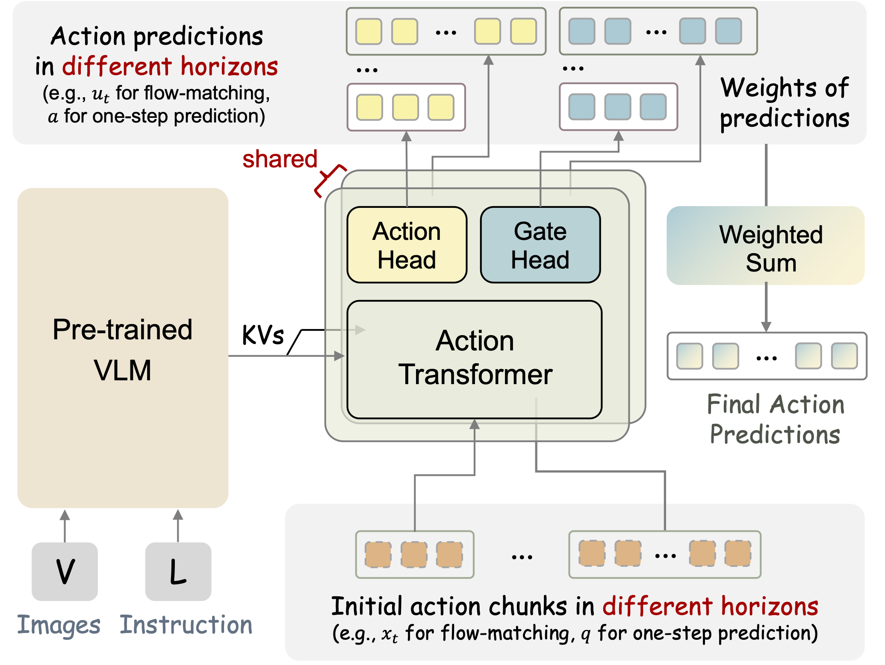
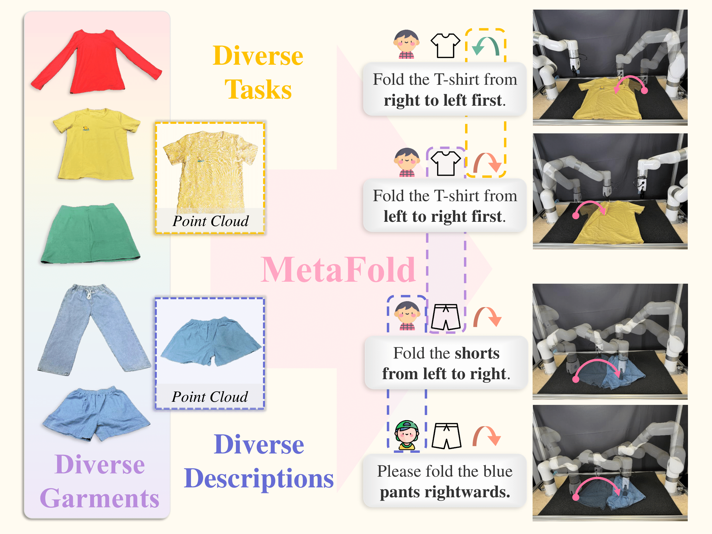
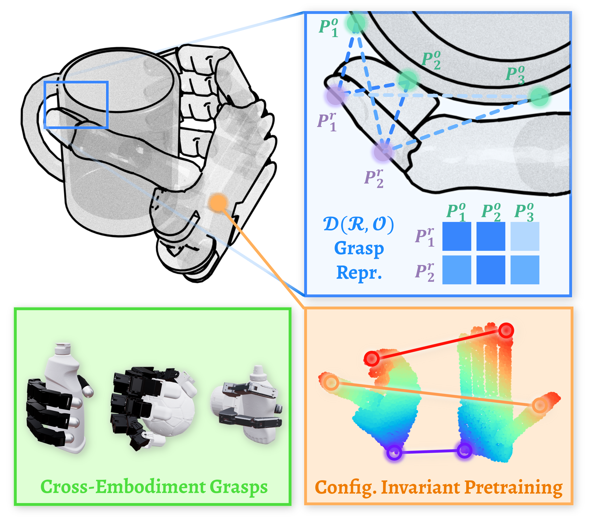
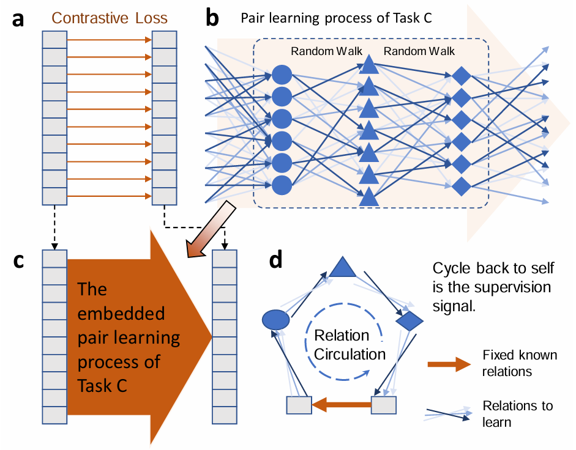
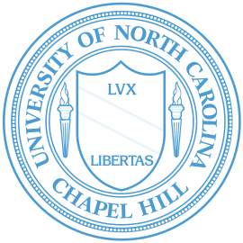
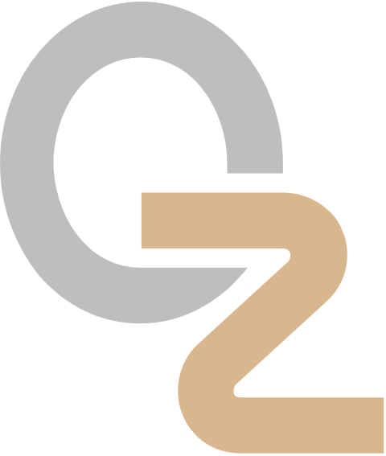

Ph.D. Student in Computer Science · Robotics
Zhenyu Wei 卫振宇
I am a first-year CS Ph.D. student at University of North Carolina at Chapel Hill, advised by Prof. Mingyu Ding. I received my Bachelor's degree in Computer Science at Shanghai Jiao Tong University. During my undergraduate years, I was fortunate to be advised by Prof. Cewu Lu, Prof. Lin Shao, and Prof. Huazhe Xu.

01
News
- OHRA has been accepted to RSS 2026!
- Started my Ph.D. journey at University of North Carolina at Chapel Hill!
- MetaFold has been accepted to IROS 2025 as oral presentation!
- $\small \mathcal{D(R, O)}$ Grasp won the ICRA 2025 Best Paper Award on Robot Manipulation and Locomotion, and TelePreview won the Best Paper Award at ICRA 2025 Workshop on Human-Centric Multilateral Teleoperation!
- $\small \mathcal{D(R, O)}$ Grasp has been accepted to ICRA 2025!
- IRC has been accepted to TPAMI!
- $\small \mathcal{D(R, O)}$ Grasp won the Best Robotics Paper Award at CoRL 2024 Morphology-Aware Policy and Design Learning Workshop!
02
Research
My research focuses on dexterous manipulation, with an emphasis on cross-embodiment learning. I aim to develop unified representations of robotic hands and actions, enabling general policies that transfer across different embodiments.







Auto-Pairing Positives through Implicit Relation Circulation for Discriminative Self-Learning
TPAMI 2025 IEEE Transactions on Pattern Analysis and Machine Intelligence
03
Selected Honors
- 2025 ICRA 2025 Best Paper Award on Robot Manipulation and Locomotion
- 2025 Best Paper Award, ICRA 2025 @ Human-Centric Multilateral Teleoperation Workshop
- 2025 Zhiyuan Outstanding Scholarship, Top 30 Undergraduates at SJTU
- 2024 Best Robotics Paper Award, CoRL 2024 @ MAPoDeL Workshop
04
Experience

University of North Carolina at Chapel Hill, USA
2025.08 – PresentPh.D. in Computer Science · Research Advisor: Prof. Mingyu Ding

Tsinghua Embodied AI Lab (TEA Lab) · Shanghai Qi Zhi Institute, China
2025.02 – 2025.07Research Intern · Research Advisor: Prof. Huazhe Xu
LinS Lab · National University of Singapore, Singapore
2024.06 – 2025.02Research Assistant · Research Advisor: Prof. Lin Shao
Machine Vision and Intelligence Group (MVIG) · Shanghai Jiao Tong University, China
2022.10 – 2024.05Research Intern · Research Advisor: Prof. Cewu Lu
Shanghai Jiao Tong University, China
2021.09 – 2025.06B.Eng. in Computer Science (Zhiyuan Honor Degree) · GPA: 4.0/4.3